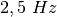

Résonance d’un pendule forcé¶
Objectif
Démontrer la résonance d’un pendule forcé.


Procédure
Réaliser un pendule avec deux aimants boutons et un morceau de papier. Le suspendre et placer la bobine de 3000 tours à proximité, comme montré sur la figure.
- Connecter la bobine entre SQ1 et GND
- Calculer la fréquence de résonance d’après la longueur du pendule
- Scanner la fréquence au voisinage de la fréquence de résonance attendue
Discussion
Quand SQ1 atteint la fréquence de résonance du pendule, son amplitude
augmente. Un pendule long de 4 cm (du centre des aimants à l’axe de
rotation) a résonné à environ , presque conformément à la
fréquence naturelle calculée. La fréquence de résonance est donnée par
 , où est la distance du centre de
l’aimant au point de suspension et
, où est la distance du centre de
l’aimant au point de suspension et  est l’accélération de la
pesanteur.
est l’accélération de la
pesanteur.
Recommencer l’expérience en modifiant la longueur du pendule.